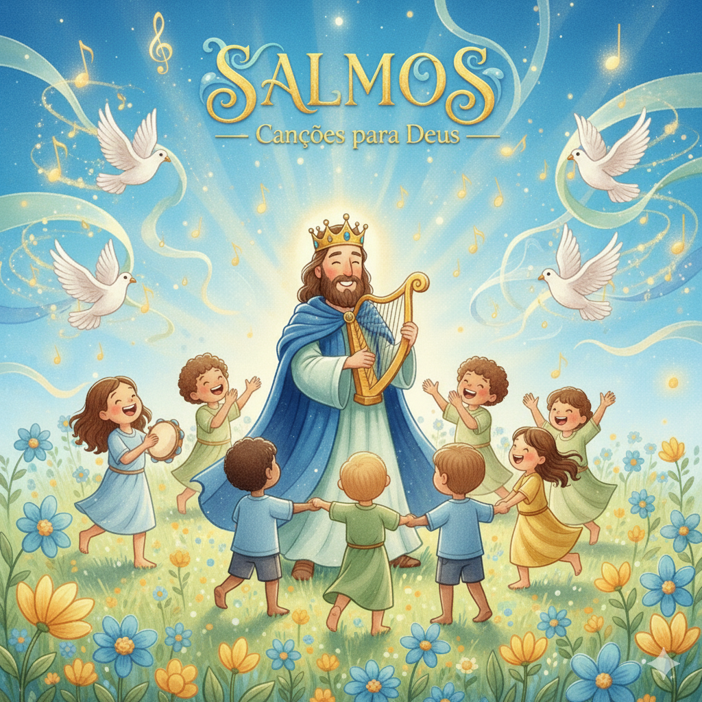
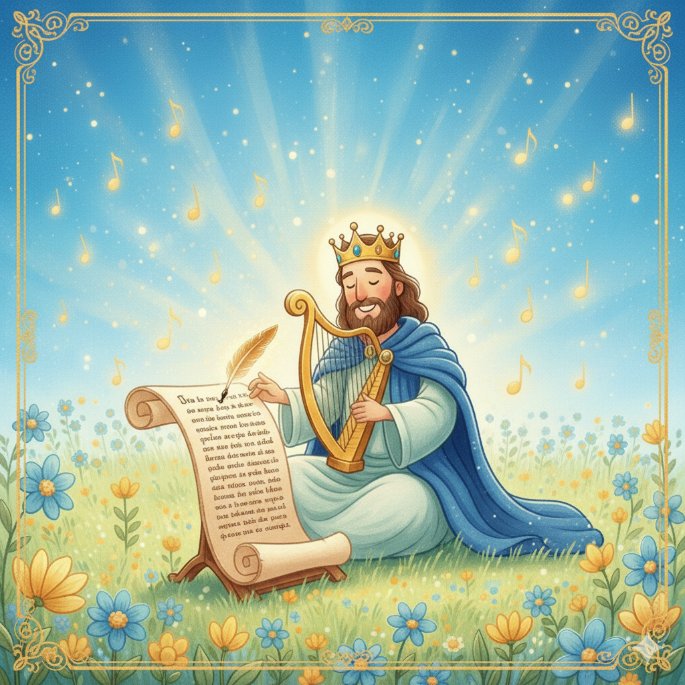
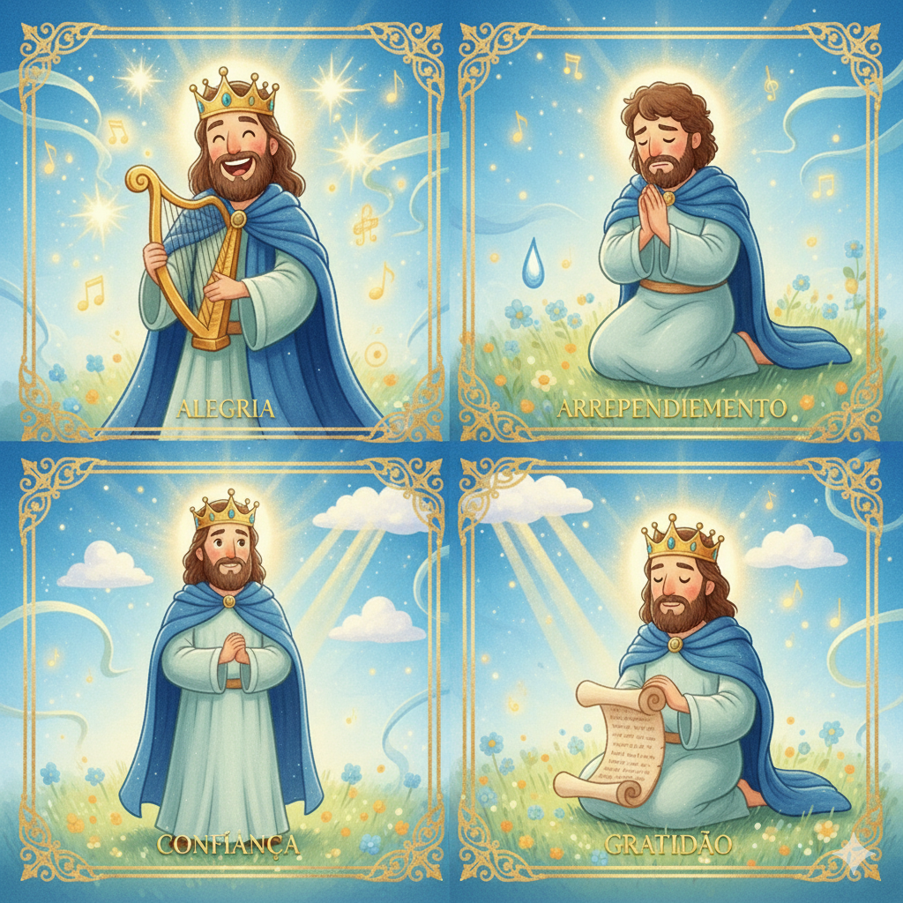
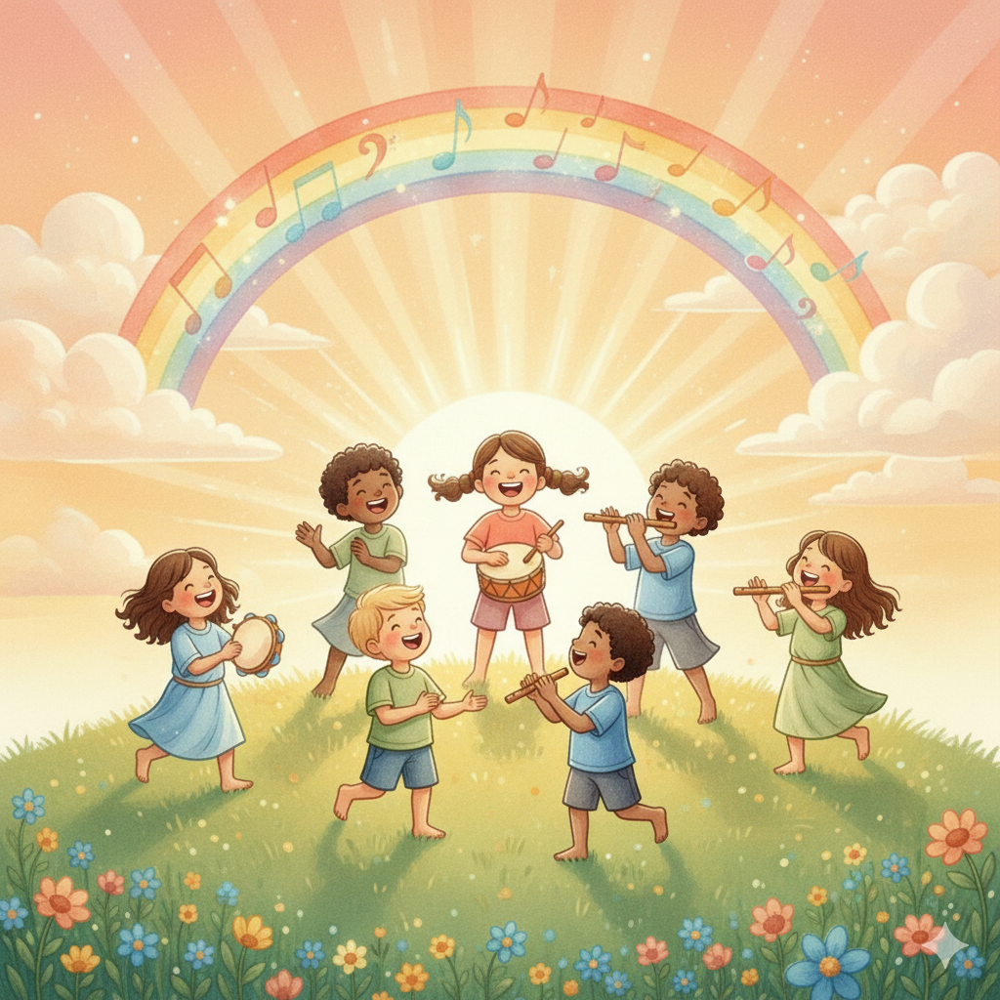
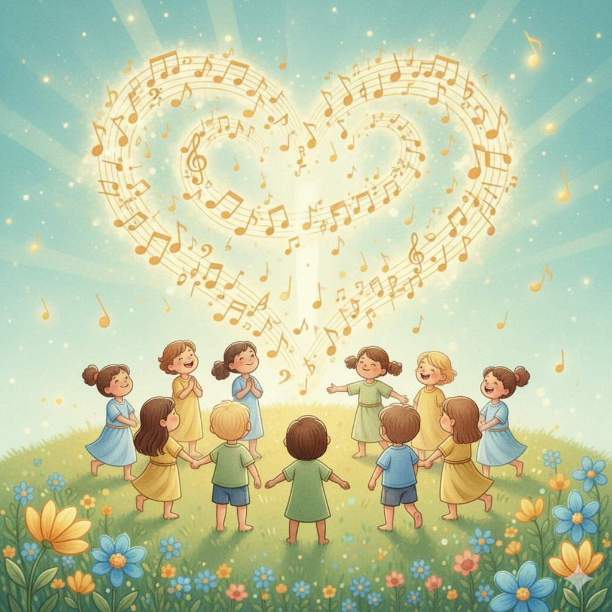
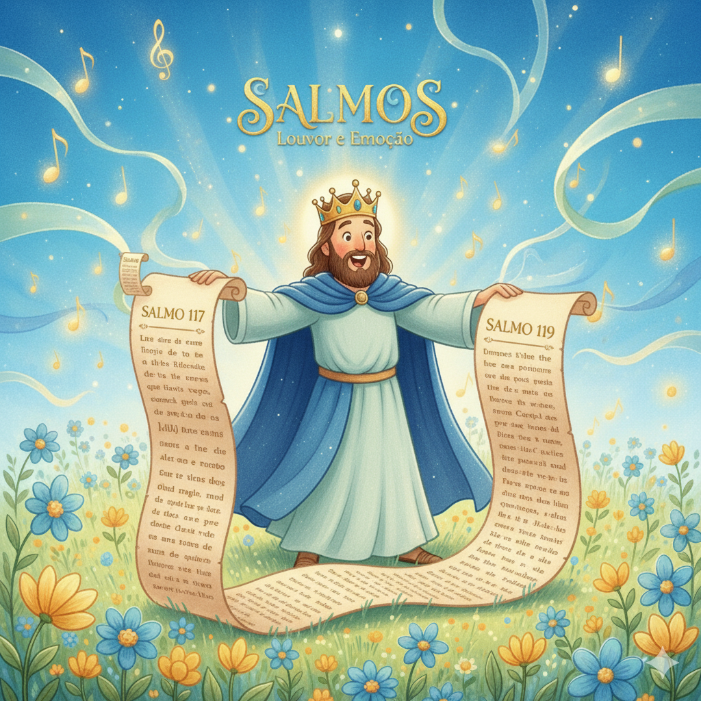

O Hinário da Bíblia — Um Resumo Visual para Crianças
Nos Salmos, pessoas falaram com Deus de verdade,
Chorando, cantando, pedindo com sinceridade.
Davi gritou, adorou, confessou e agradeceu,
E mostrou que Deus escuta tudo que nos pertenceu!
Não precisa esconder o que você sente,
Deus quer ouvir o coração da gente!
📖 Salmo 62:8 — "Derramai diante dele o vosso coração; Deus é o nosso refúgio."
Os Salmos são cheios de música e louvor,
Celebrando quem Deus é, Seu imenso amor!
Com instrumentos, canto e dança também,
O povo adorava dizendo: "Deus é nosso bem!"
Adoração não é só cantar na igreja,
É viver com gratidão em qualquer que seja a viagem!
📖 Salmo 150:6 — "Tudo que tem fôlego louve ao Senhor! Aleluia!"
Quando estamos na escuridão e sem saber o que fazer,
Os Salmos são a lâmpada que nos faz ver!
Cada verso é um abraço do céu,
Lembrando que Deus é fiel e nunca nos esqueceu!
A Palavra de Deus é luz pro caminho,
Guia nossos passos com amor e carinho!
📖 Salmo 119:105 — "Lâmpada para os meus pés é a tua palavra, e luz para o meu caminho."
🎵
"O Senhor é o meu pastor; nada me faltará."
Salmo 23:1
Davi escreveu isso sabendo que um bom pastor cuida de cada ovelha — dá comida, água, proteção e descanso. Deus cuida de você assim: com atenção total, em cada detalhe, o tempo todo!
Davi escreveu mais da metade dos Salmos! Ele foi pastor, guerreiro e rei — mas, acima de tudo, um homem apaixonado por Deus. Nos seus salmos vemos alegria, medo, arrependimento e gratidão profunda.
📖 Leia na Bíblia — Salmo 51:10
"Cria em mim, ó Deus, um coração puro e renova em mim um espírito firme."
Asafe era o maestro dos músicos do templo, escolhido por Davi. Ele compôs 12 salmos que falam sobre a justiça de Deus e sobre confiar n'Ele mesmo quando as coisas parecem injustas.
📖 Leia na Bíblia — Salmo 73:28
"Para mim, o bom é estar perto de Deus; fiz do Senhor Deus meu refúgio."
Um grupo de levitas que serviam como porteiros e cantores do templo. Eles compuseram 11 salmos lindos, incluindo o famoso Salmo 42 — que começa com uma das imagens mais bonitas da Bíblia!
📖 Leia na Bíblia — Salmo 42:1
"Como o cervo anseia pelas correntes das águas, assim a minha alma anseia por ti, ó Deus."


📖 Leia em casa!
Salmos tem 150 capítulos — divididos em 5 livros, como um hinário completo para adorar a Deus!
📗 Livro I (Salmos 1–41) — Davi e o Início
Salmos escritos principalmente por Davi — sobre o homem que confia em Deus em todas as situações da vida.
📖 Salmo 23:1 — "O Senhor é o meu pastor; nada me faltará."
📘 Livro II (Salmos 42–72) — Buscando a Deus
Salmos dos Filhos de Corá e de Davi — expressando saudade de Deus, pedido de socorro e confiança.
📖 Salmo 42:1 — "Como o cervo anseia pelas correntes das águas, assim a minha alma anseia por ti."
📙 Livro III (Salmos 73–89) — No Santuário
Salmos de Asafe e dos Filhos de Corá — meditando sobre a santidade de Deus e Sua fidelidade ao povo.
📖 Salmo 84:10 — "Vale mais um dia nos teus átrios do que mil em outro lugar."
📕 Livros IV e V (Salmos 90–150) — Grande Louvor
A grande coleção final — celebrando o reinado de Deus, Sua criação e culminando com 5 salmos de "Aleluia"!
📖 Salmo 150:6 — "Tudo que tem fôlego louve ao Senhor! Aleluia!"
Os salmos mostram que podemos dizer tudo a Deus — alegria, medo, raiva, tristeza, dúvidas. Deus não quer orações ensaiadas; Ele quer o coração real.
📖 Salmo 62:8
"Derramai diante dele o vosso coração; Deus é o nosso refúgio."
Salmos é o livro do Antigo Testamento mais citado por Jesus e pelos apóstolos! Jesus usou Salmos para ensinar, orar e até na cruz. Esse livro conecta os dois Testamentos.
📖 Salmo 22:1 (citado por Jesus na cruz)
"Deus meu, Deus meu, por que me abandonaste?"
Quando cantamos e louvamos a Deus, algo acontece dentro de nós — o desânimo some, a fé cresce e a paz vem! Os salmos ensinaram isso ao povo de Deus por séculos.


Salmos foi o livro de oração do povo de Deus por mais de 3.000 anos. Cada salmo é uma oração pronta — você pode orar com as mesmas palavras que Davi e Jesus usaram!
📖 Salmo 5:3
"De manhã ouves a minha voz; de manhã apresento a ti a minha oração e fico na expectativa."
Nos 150 salmos encontramos Deus como pastor, rei, guerreiro, refugio, luz, rocha e muito mais! Cada salmo revela um faceta do caráter de Deus.
📖 Salmo 18:2
"O Senhor é a minha rocha, a minha fortaleza e o meu libertador."
🌟 Lição Principal: Em qualquer situação da vida — alegria, medo, arrependimento ou gratidão — existe um salmo que expressa exatamente o que você sente!
O Salmo 119 tem 176 versículos — é o maior capítulo de toda a Bíblia! Já o Salmo 117 tem apenas 2 versículos — o menor de toda a Bíblia!
📍 Centro da Bíblia: O Salmo 118 é o capítulo central de toda a Bíblia — existem 594 capítulos antes e 594 depois dele. E o versículo central? "É melhor refugiar-se no Senhor do que confiar no homem." (Sl 118:8)
✝️ Jesus usou Salmos na cruz: Quando Jesus disse "Meu Deus, meu Deus, por que me abandonaste?" (Mt 27:46), Ele estava orando com as palavras do Salmo 22 — escrito por Davi mil anos antes!
🎸 O Salmo 150 cita 9 instrumentos! Harpa, lira, alaúde, trombeta, flauta, címbalos... Era uma orquestra completa louvando a Deus! Imagine como devia ser lindo!

Converse com sua família, turma ou professor sobre essas perguntas!
💬
Davi conversava com Deus sobre tudo — medo, raiva, alegria, tristeza. Você costuma contar para Deus como está se sentindo de verdade? O que você normalmente fala para Ele?
🎵
Em alguns salmos, Davi começa triste e termina louvando — mesmo sem a situação ter mudado. Você já percebeu que cantar ou orar muda como você se sente por dentro? Como aconteceu?
🐑
O Salmo 23 diz que o Senhor é nosso pastor — dá descanso, guia, protege e está conosco mesmo nos momentos difíceis. Em qual parte da sua vida você mais precisa do cuidado do Bom Pastor hoje?
Escolha um desafio (ou faça os três!) e seja um explorador da Bíblia!
📖
Leia o Salmo 23 e o Salmo 150 em voz alta para alguém da sua família. Um fala sobre o cuidado de Deus, o outro é um louvor com toda a orquestra!
✍️
Escreva um mini-salmo de 4 a 6 linhas — pode ser de gratidão, pedido ou louvor. Comece com "Senhor, eu te agradeço por..." ou "Ó Deus, me ajuda a..." Use suas próprias palavras!
🎶
Escolha uma música de louvor que sua família goste e cantem juntos esta semana. Depois compartilhe por que essa música é especial para você — assim como Davi compartilhava seus salmos!
Trilho Kids | Desenvolvido com ❤️ para crianças © 2025